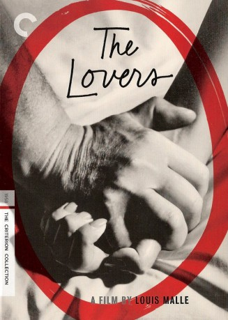
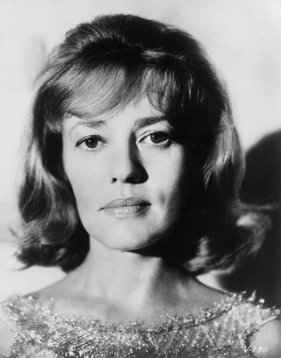

#7332 Die Liebenden
Alternativ: The Lovers (Englischer Titel)
 
 IMDB-Wertung: 7.3 / 10
IMDB-Wertung: 7.3 / 10  Metascore: 0
Metascore: 0 
"Die Liebenden" ist Louis Malles zweiter Film mit Jeanne Moreau. Wegen seiner für die 1950er Jahre gewagten Freizügigkeit löste er heftige Proteste aus und durfte nur in einer gekürzten und entschärften Version gezeigt werden.
Jahr: 1958
Dauer: 91 Minuten
FSK: 0
Land: Frankreich Studio: Pallas FilmverleihTonspuren:
Untertitel: Deutsch,
Auflösung: 1080p (1920x816) Größe: 5601 MB
Genre: Drama, Liebe
Regisseur: Louis Malle
Drehbuch: Louise de Vilmorin
Soundtrack:
Darsteller:
-  Jeanne Moreau als Jeanne Tournier
- Jean-Marc Bory als Bernard Dubois-Lambert
- Judith Magre als Maggy Thiebaut-Leroy
- José Luis de Vilallonga als Raoul Florès
- Gaston Modot als Coudray
- Michèle Girardon als Hélène Cavalier
- Jean-Claude Brialy als Un Garçon a Manège , uncredited
- Pierre Frag als
- Gib Grossac als
- Lucienne Hamon als Chantal
- Georgette Lobre als Marthe
- Claude Mansard als Marcelot
 Alain Cuny als Henri Tournier
Alain Cuny als Henri Tournier- Patricia Maurin als Catherine Tournier , uncredited
Datei: X:\1950-1959\Liebenden, Die (1958, FSK0, 1920x816).mkv seit 16.10.2017
Festplatte: HD 1900-1970
 Es gibt insgesamt 141 Filme in der Gruppe '1950-1959'
Es gibt insgesamt 141 Filme in der Gruppe '1950-1959'